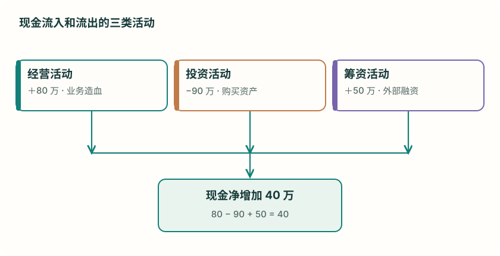
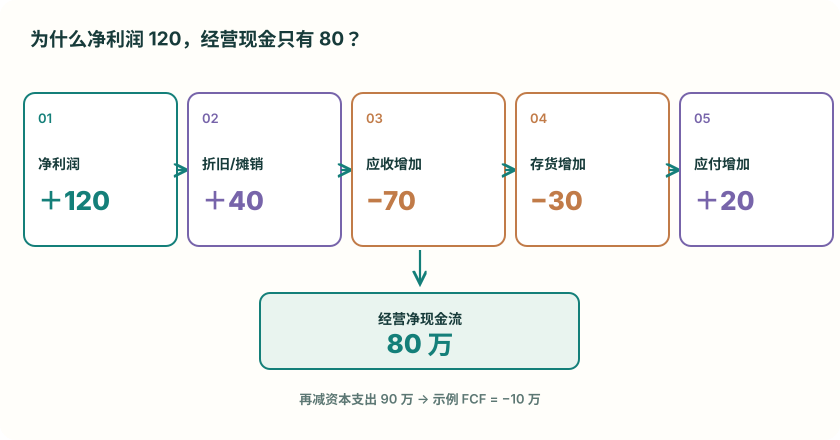

现金流量表：利润如何变成可用资金
企业可以账面盈利却需要持续借钱支付日常开销。现金流量表的作用不是给利润表判真假，而是把资金进出与经营、投资、筹资决策关联起来。
“赚钱”和“有钱”到底差在哪里？
一家公司今年净利润 120 万，但应收账款增加 70 万、存货增加 30 万，供应商信用也提供了部分缓冲。它可能同时呈现经营现金流低于利润的结果。这不是会计自相矛盾，而是应计项目和现金收支的时间分布不同。现金流也不是不可操纵的“终极真相”：交易安排、保理、票据、供应链融资以及分类政策都可能改变外观。
现金流量表通常把现金活动分为三类：经营活动对应商品及服务的经常性资金循环；投资活动对应长期资源配置与资产处置；筹资活动对应债务和权益资金的取得及偿还。分类细节必须依据企业适用的会计准则。

从净利润到经营现金流：间接法
间接法通常从利润指标出发，调整非现金项目、非经营相关项目以及营运资本变化。为了建立手算直觉，设净利润 120，折旧等非现金费用 40，应收增加 70，存货增加 30，应付增加 20，且没有其他项目。经营现金流等于 120 + 40 − 70 − 30 + 20 = 80 万元。

公式中的 NI 为净利润，D 为折旧等示意非现金费用，ΔAR、ΔINV、ΔAP 分别是应收、存货和应付的期末减期初差额。复杂报表中的应收变动会受到汇兑、并购及非现金调整影响，不能把所有资产负债表差额直接作为现金流调整。
自由现金流有多种定义，先说明用途
在常见的分析口径中，FCF = 经营现金流量净额 − 资本性支出。示例中经营现金流 80、资本性支出 90，得到 FCF = −10 万元。这个负数不等于企业“经营不赚钱”：如果资本支出用于扩大产能，可能意味着未来增长；如果用于维持老旧设备，压力则不同。
这里 CFO 是经营活动净现金流，CapEx 是自定义范围内的资本支出。计算时要说明是否包括购买无形资产、资本化开发支出、租赁相关现金支付和并购对价。若采用 FCFF 或 FCFE，融资现金流及税后利息调整方式不同，不能混写。
经营现金流为正、投资现金流为负不一定就是“优质成长”；经营现金流为负也可能来自季节性、订阅计费时间、供应链备货等。必须连同资本开支回报与融资能力观察。
怎样观察现金流质量？
建议建立至少三年的现金流桥接表，核对现金及现金等价物口径和报表附注，结合收入收现、应收账龄、合同负债与存货周转解释变化。短期现金流异常并不自动构成财务造假证据；但是长期净利润增长而经营现金流持续背离，值得进一步调查。
| 观察项 | 可能提示 | 不能直接推断 |
|---|---|---|
| CFO 低于净利润 | 应收、存货增长或经营付款增加 | 所有利润都不真实 |
| CFI 为大额负值 | 产能扩张或投资活动 | 投资一定创造价值 |
| CFF 为大额正值 | 债务或权益融资 | 企业一定陷入困境 |
| FCF 多年为负 | 资本投入较高或经营现金偏低 | 企业未来一定无法自我融资 |
调整营运资本，观察经营现金变化
将营运资本净增加记为正的现金占用。默认利润 120、非现金费用 40、净营运资本增加 80（70+30−20）、资本开支 90，先算 CFO=80，再算 FCF=−10。若营运资本占用减少，其他条件不变，CFO 会相应改善。
动手调整数字
修改输入观察对应关系；这是刻意简化的教学算例，不自动覆盖税金、特殊合同安排或其他现金流调整。
自测：现金增加为何不一定是好消息？
若企业经营现金流为 −50、投资现金流为 +120（主要出售工厂）、筹资现金流为 +30，现金净增加 100。报告期末现金上升可能伴随核心业务失血和资产出售，需要进一步看经营能力是否被削弱。
自测：三类现金流合计多少？最重要的追问是什么？
−50 + 120 + 30 = +100 万元。下一步需要核实出售资产的原因、是否可持续，以及经营业务未来如何创造现金，而不是把“现金余额增加”直接等同于经营改善。
本章结论：现金流量表把利润兑现、投资安排和融资依赖放到同一张图里，但只有连同附注才能形成可信解释。
官方资料与适用范围
以上示例数据均为教学虚构。法规与会计准则可能按年度修订，实际分析时应以公司报告期间适用版本为准。